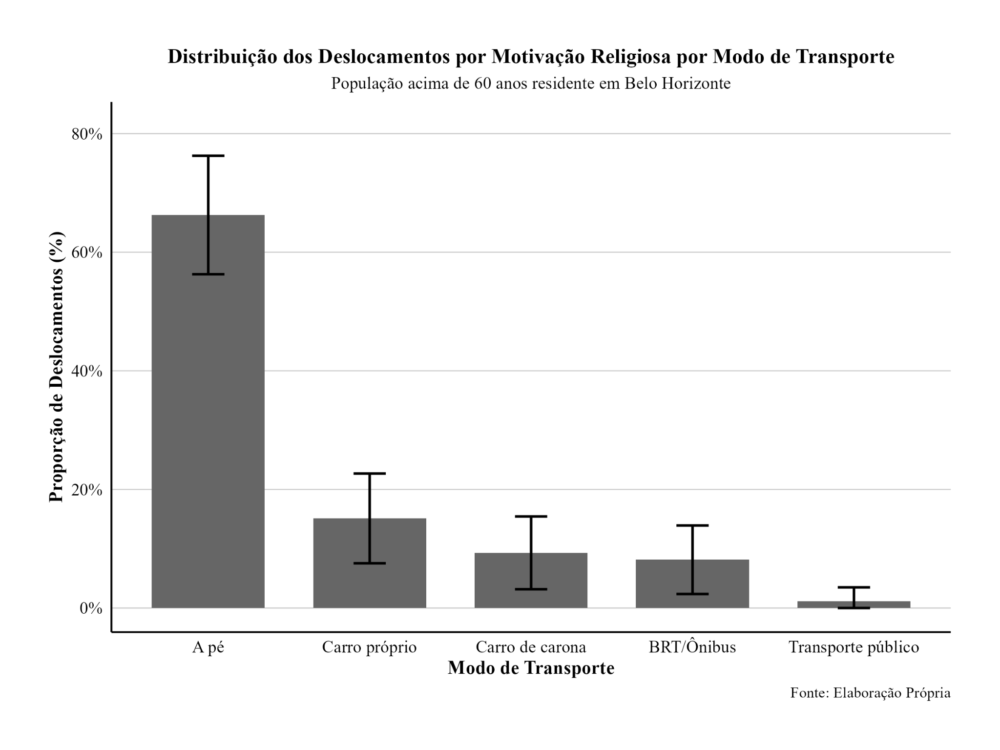
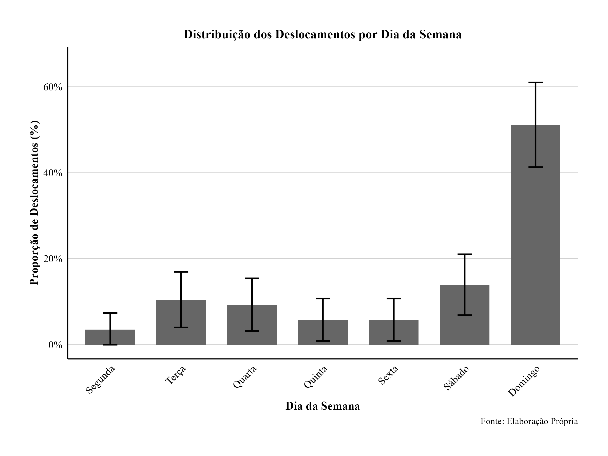
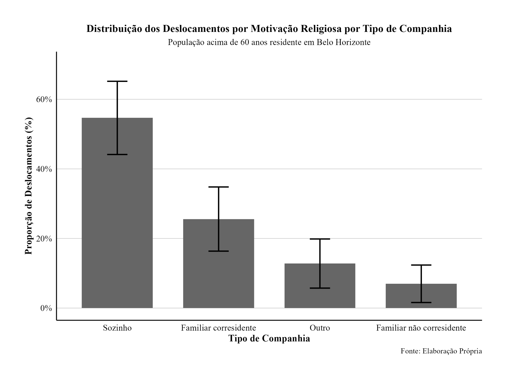
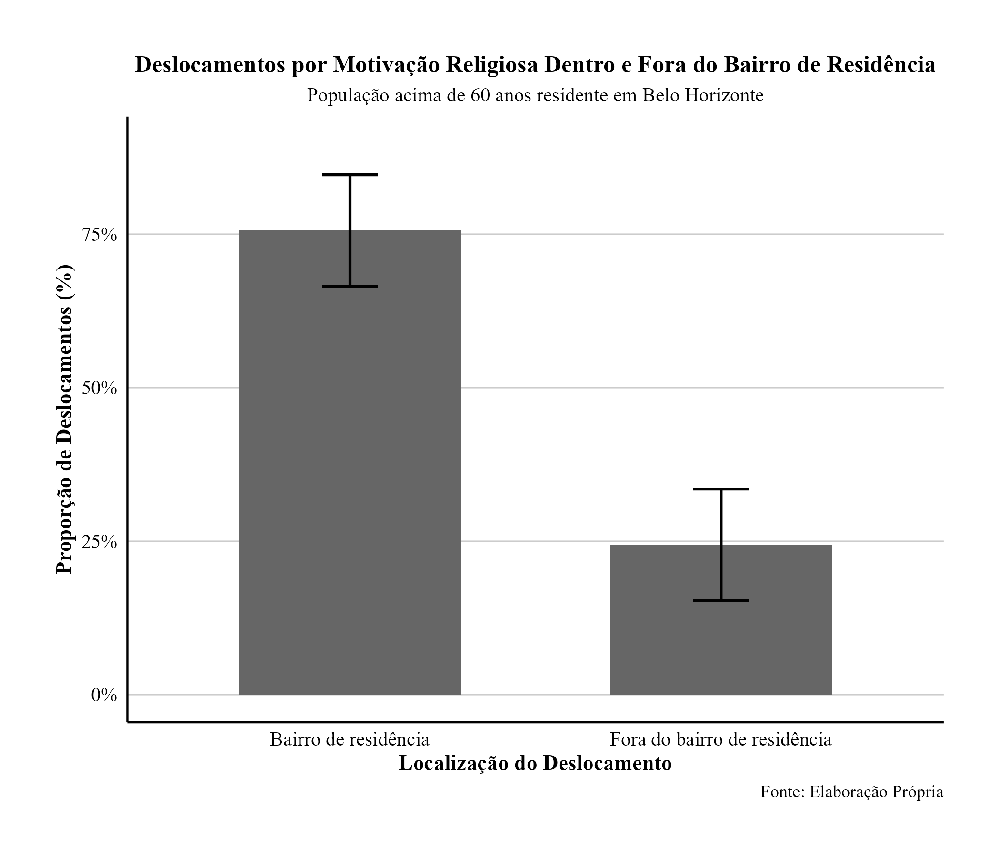
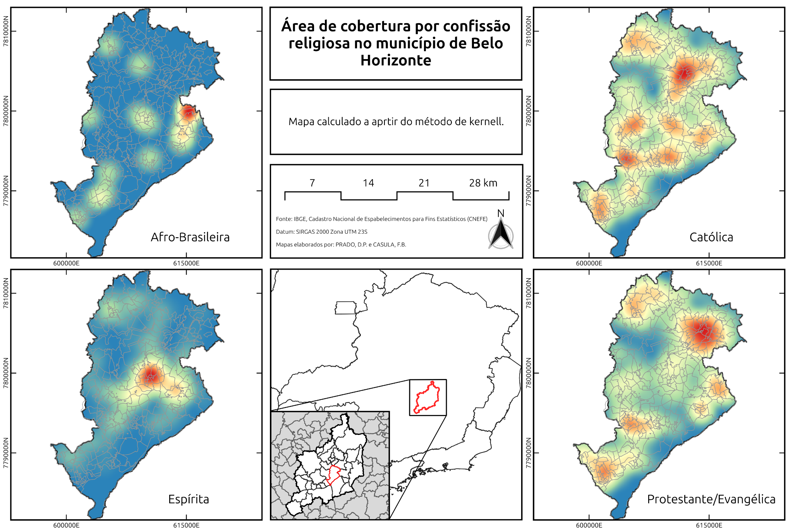
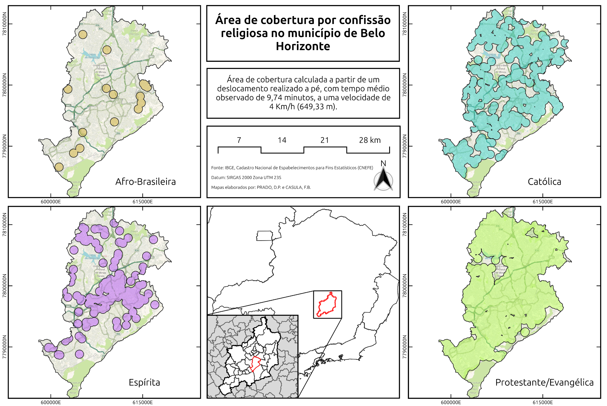

Resultados
1 Síntesis de los desplazamientos religiosos
Entre los 86 desplazamientos por motivos religiosos observados para residentes de Belo Horizonte, predominan los viajes realizados los domingos, a pie, frecuentemente sin compañía y con destino localizado en el propio barrio de residencia.




1.1 Día de la semana
| Día | n | Proporción | IC 95% |
|---|---|---|---|
| Lunes | 3 | 3,49% | 0,00%–7,37% |
| Martes | 9 | 10,47% | 3,99%–16,94% |
| Miércoles | 8 | 9,30% | 3,16%–15,44% |
| Jueves | 5 | 5,81% | 0,86%–10,77% |
| Viernes | 5 | 5,81% | 0,86%–10,77% |
| Sábado | 12 | 13,95% | 6,63%–21,28% |
| Domingo | 44 | 51,16% | 40,60%–61,73% |
1.2 Compañía
| Tipo de compañía | n | Proporción | IC 95% |
|---|---|---|---|
| Solo(a) | 47 | 54,65% | 44,13%–65,17% |
| Familiar corresidente | 22 | 25,58% | 16,36%–34,80% |
| Otro | 11 | 12,79% | 5,73%–19,85% |
| Familiar no corresidente | 6 | 6,98% | 1,60%–12,35% |
1.3 Modo y tiempo de desplazamiento
| Modo | n | Proporción | IC 95% | Tiempo medio (min) | IC 95% del tiempo |
|---|---|---|---|---|---|
| A pie | 57 | 66,28% | 56,29%–76,27% | 9,7 | 8,2–11,3 |
| Automóvil propio | 13 | 15,12% | 7,54%–22,69% | 8,6 | 5,64–11,58 |
| Automóvil compartido | 8 | 9,30% | 3,16%–15,44% | — | — |
| BRT/Autobús | 7 | 8,14% | 2,36%–13,92% | — | — |
| Transporte público | 1 | 1,16% | 0,00%–3,44% | — | — |
El tiempo medio considerando todos los modos fue de 12,8 minutos (IC 95%: 10,4–15,2).
1.4 Localización del destino
| Localización | n | Proporción | IC 95% |
|---|---|---|---|
| Barrio de residencia | 65 | 75,58% | 66,50%–84,70% |
| Fuera del barrio de residencia | 21 | 24,42% | 15,30%–33,50% |
2 Modelos de regresión logística
En los modelos para Belo Horizonte, el sexo femenino presentó asociación positiva con los desplazamientos religiosos. En el modelo general para al menos un desplazamiento, las mujeres presentaron OR de 3,914 (IC 95%: 1,685–9,837). La movilidad reducida presentó OR de 0,256 (IC 95%: 0,091–0,642).
Los valores son razones de posibilidades; los intervalos de confianza de 95% aparecen entre corchetes. + p < 0,1; * p < 0,05; ** p < 0,01; *** p < 0,001.
2.1 Al menos un desplazamiento religioso durante la semana
| Variable | Demográfico | Sociodemográfico | General |
|---|---|---|---|
| Intercepto | 1,044 [0,018–64,040] | 0,765 [0,010–62,205] | 1,114 [0,014–103,386] |
| Edad | 0,966 [0,913–1,018] | 0,972 [0,917–1,027] | 0,975 [0,918–1,032] |
| Sexo femenino | 3,527** [1,602–8,336] | 3,512** [1,557–8,546] | 3,914** [1,685–9,837] |
| Raza: negros | 1,780 [0,831–3,987] | 1,600 [0,706–3,783] | 1,623 [0,694–3,963] |
| Estado civil: separado(a) | 0,473 [0,082–2,357] | 0,424 [0,073–2,119] | 0,417 [0,070–2,149] |
| Estado civil: casado(a) | 1,027 [0,333–3,602] | 1,036 [0,335–3,638] | 0,949 [0,290–3,472] |
| Estado civil: viudo(a) | 1,479 [0,444–5,507] | 1,440 [0,427–5,419] | 1,573 [0,441–6,284] |
| Ingreso: R$ 1.620–2.600 | — | 0,835 [0,275–2,377] | 0,589 [0,181–1,775] |
| Ingreso: R$ 2.300–4.600 | — | 1,303 [0,469–3,578] | 0,866 [0,288–2,540] |
| Ingreso: más de R$ 4.600 | — | 0,579 [0,179–1,714] | 0,392 [0,113–1,239] |
| Movilidad reducida | — | — | 0,256** [0,091–0,642] |
2.2 Dos o más desplazamientos religiosos durante la semana
| Variable | Demográfico | Sociodemográfico | General |
|---|---|---|---|
| Intercepto | 0,012 [0,000–3,751] | 0,061 [0,000–32,316] | 0,122 [0,000–88,267] |
| Edad | 0,995 [0,923–1,069] | 0,980 [0,905–1,057] | 0,979 [0,898–1,061] |
| Sexo femenino | 3,671* [1,197–13,867] | 3,350+ [1,045–13,184] | 3,482+ [1,029–14,336] |
| Raza: negros | 2,901+ [0,959–10,863] | 2,764 [0,814–11,498] | 2,823 [0,781–12,383] |
| Estado civil: separado(a) | 1,100 [0,040–30,313] | 1,188 [0,041–34,609] | 1,411 [0,047–43,178] |
| Estado civil: casado(a) | 2,991 [0,491–58,109] | 2,609 [0,402–51,978] | 2,310 [0,323–47,752] |
| Estado civil: viudo(a) | 3,508 [0,538–69,430] | 3,311 [0,489–66,523] | 4,178 [0,551–89,789] |
| Ingreso: R$ 1.620–2.600 | — | 0,193 [0,010–1,138] | 0,126+ [0,006–0,802] |
| Ingreso: R$ 2.300–4.600 | — | 0,404 [0,057–1,842] | 0,243 [0,032–1,203] |
| Ingreso: más de R$ 4.600 | — | 0,896 [0,205–3,501] | 0,586 [0,123–2,470] |
| Movilidad reducida | — | — | 0,178* [0,035–0,664] |
2.3 Indicadores de ajuste
| Desenlace | Modelo | n | AIC | Log-verosimilitud | Pseudo-R² de McFadden |
|---|---|---|---|---|---|
| ≥1 desplazamiento | Demográfico | 182 | 191,5 | −88,763 | 0,086 |
| ≥1 desplazamiento | Sociodemográfico | 182 | 195,6 | −87,814 | 0,096 |
| ≥1 desplazamiento | General | 182 | 188,9 | −83,428 | 0,141 |
| ≥2 desplazamientos | Demográfico | 182 | 120,2 | −53,120 | 0,095 |
| ≥2 desplazamientos | Sociodemográfico | 182 | 122,3 | −51,137 | 0,129 |
| ≥2 desplazamientos | General | 182 | 117,4 | −47,679 | 0,188 |
3 Equipamientos religiosos y cobertura
Los establecimientos fueron identificados en el CNEFE 2022. Después de la clasificación inicial, 622 registros fueron revisados manualmente. Los 483 registros descritos solamente como “IGREJA” fueron censurados, resultando en 3.848 puntos clasificados.
| Confesión | Establecimientos | Participación | Cobertura poblacional | ICR |
|---|---|---|---|---|
| Protestante/Evangélica | 3.326 | 86,4% | 2.277.951 | 98,4% |
| Católica | 296 | 7,7% | 1.793.976 | 77,5% |
| Espírita | 154 | 4,0% | 974.622 | 42,1% |
| Afrobrasileña | 17 | 0,4% | 198.386 | 8,5% |
| Otra | 55 | 1,4% | — | — |
4 Concentración espacial de los equipamientos — kernel

5 Área de cobertura por confesión
